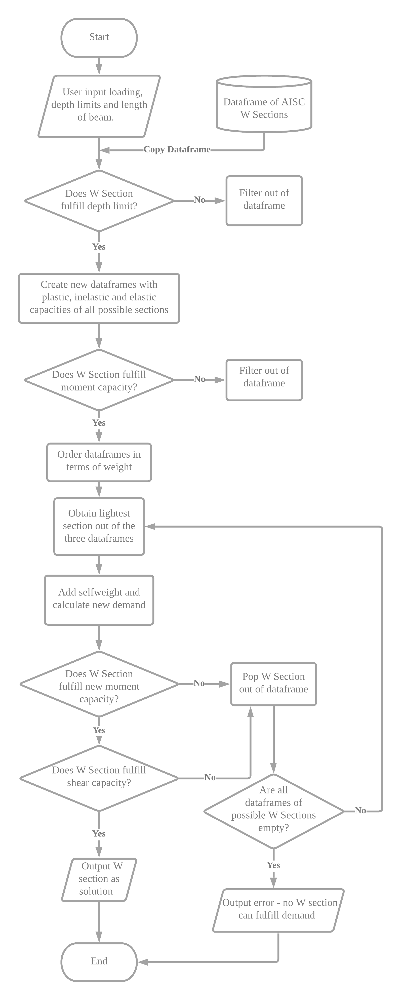
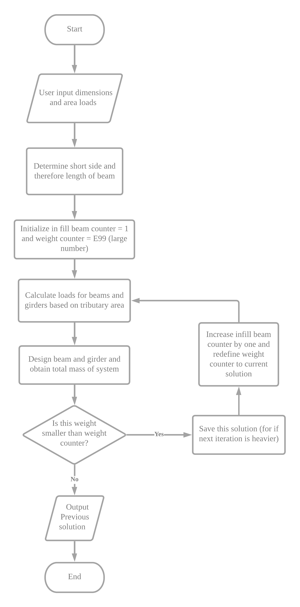

Beam Optimization App
Monday, January 11 2021

I made this small app that optimizes the sizes and number of infill of beams based on a set of gravity loads. Currently the app only includes dead loads and live loads but this function can easily be expanded to include other types of loads as well. The sizes of the beams were chosen from the standard AISC W shapes as these are typically used for beam structures, therefore the calculations were all done in imperial units. This app is hosted on Heroku, the link to the app can be found here and the github repository with the code can be found here. The following post goes through how the code works.
Package Requirements
To run this app the following packages must be installed.
- Streamlit (0.62.0)
- Numpy (1.18.4)
- Pandas (1.0.3)
- Plotly (4.7.1)
Code
The structural calculations were coded into various functions since there would be an iterative process to optimize the number of infill beams.
Below is a brief explanation of each function used for the structural calculations.
The first function is the ‘beam_load’ function that calculates the largest moment and shear stress of a beam under a linear distributed load. The inputs for these functions are the magnitude of the dead and live distributed loads and the length of the beam. The tributary area is calculated separately. ASCE 7 load factors were used to calculate the stresses. A similar function was created to calculate the loads for the girders (which only have point loads at the points of the beams). The function for the girders does not calculate the load combinations as they are added into the input for the loads.
def beam_load(DL,LL,leng):
#Calculate load on beam given psf loads and Height in feet, outputs moment in kip-in and shear in kips
lc1=1.4*DL
lc2=1.2*DL+1.6*LL
all_lc=[lc1,lc2]
m_mom=max(all_lc)*(leng*12)**(2)/8/1000
m_shear=max(all_lc)*leng*6/1000
return[m_mom,m_shear]
def girder_load(load,beam_no,Height):
#function that calculates girder load given load in kips and Height in feet, outputs moment in kip-in and shear in kips
shear=load*beam_no/2
length_b=Height*12/(beam_no+1)
moment=0
shear_count=shear
for i in range(beam_no):
if shear_count-load<=0:
moment = moment + length_b * shear_count
break
moment = moment + length_b*shear_count
shear_count=shear_count-load
return [moment,shear]
The next few functions (design, shear_design, add_self_weight) are used to size the beam based on AISC structural requirements. The code is relatively long so below is a flowchart on how these functions are utilized. First the depth requirements are fulfilled. Then the moment strengths for each failure mode (Plastic, Elastic and Inelastic) are calculated for all of the possible sizes. The lightest section is seleted then is checked for shear and then checked again for both moment and shear after adding self-weight. If this section fulfills the demand requirements then it is used as the solution. If not it will loop back to check the next lightest section and its capacities until a satisfactory section is chosen.
The next function (frame_optimizer) of the code optimizes the number of infill beams. Once again, since the code is quite long so a flowchart of this function is shown below. Essentially, this function employs a recursive algorithm. The input for this function are the area loads and dimension of the frame. The function takes the inputs and finds the shorter side thus finding the length of the beam. Then the function first designs the system for a single infill beam and then just looks for a local optimum by incrementally increasing the number of infill beams and designing the system until the weight is larger than the previous system.
The last function visualizes the beam system by plotting them as lines on a graph. The graph was made using plotly. Then the rest of the code just creates the UI through streamlit and runs the functions I mentioned above. I haven't included the code in this post since it is relatively straight forward.
Future Considerations
As mentioned above, other kinds of gravity loads, such as snow or roof, can be added in the future. This is relatively easy, since they act in the same direction. Similarly, considering moment connections would also be trivial. Another future consideration could be designing for dynamics and considering the natural frequency of the framing system.